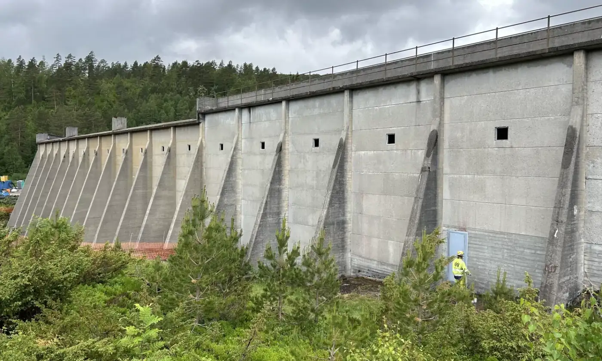
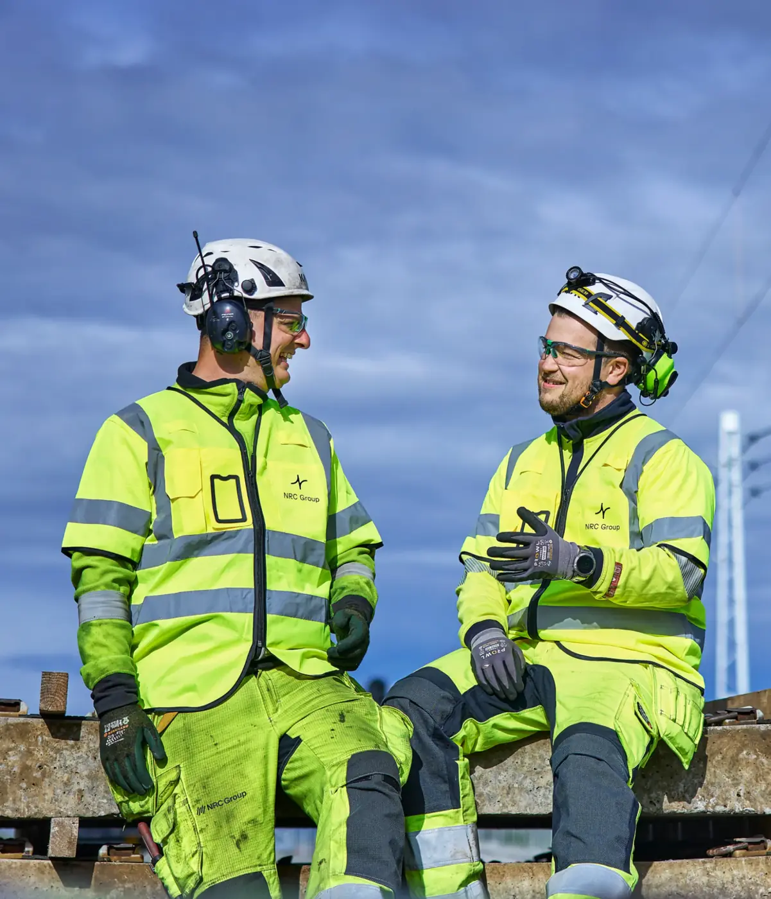

Infrastruktur · Norge, Sverige og Finland
Den mest ambisiøse infrastrukturbyggeren i Norden.
Vi utvikler, bygger og vedlikeholder kompleks infrastruktur – med kompetanse i større jernbanerelaterte prosjekter, havner, kaianlegg og broer.
JernbaneHavn og kaiBro og dam
01 — Tjenester
Vi bygger bærekraftig infrastruktur
NRC Group er ledende på bærekraftig infrastruktur for transport i Norge, Sverige og Finland.

02 — Slik jobber vi
Ulike perspektiver, beste løsninger
Å bygge bærekraftig infrastruktur som knytter mennesker, byer og samfunn sammen krever ulike perspektiver, erfaringer og kompetanser. De beste løsningene skapes av mennesker som tør å tenke nytt og ta ansvar.
- Kompleksitet – vi tar de vanskelige prosjektene.
- Bærekraft – utslipp, sortering og gjenbruk.
- Trygghet – alle skal komme trygt hjem.
03 — Prosjekter
Fra plan til ferdig anlegg
Vi jobber i hele kjeden – utvikling, bygging og vedlikehold.
- Utvikle
Prosjekt og planlegging.
- Bygge
Gjennomføring med fagfolk.
- Vedlikeholde
Anlegget skal vare.
- Forbedre
Erfaring til neste prosjekt.
Det krever mot å bygge fremtiden
Ta kontakt for en samtale om prosjektet, eller se hva vi har bygget.